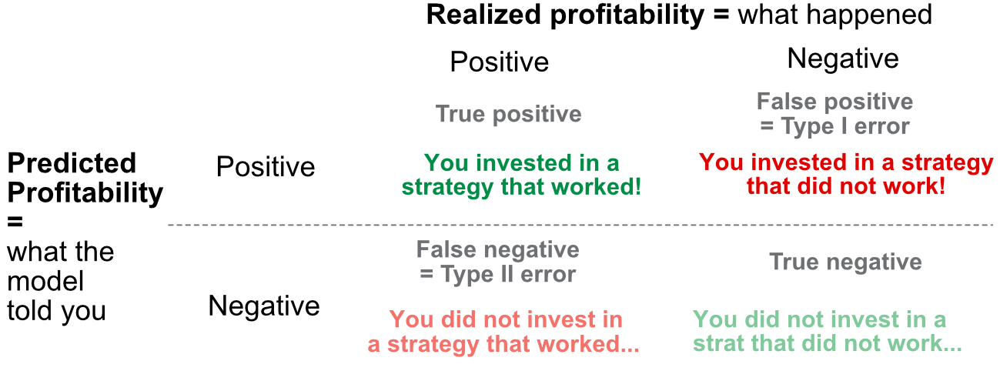
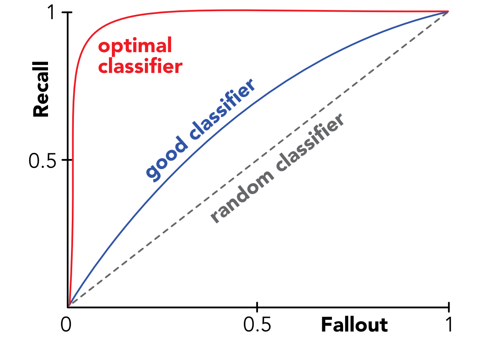
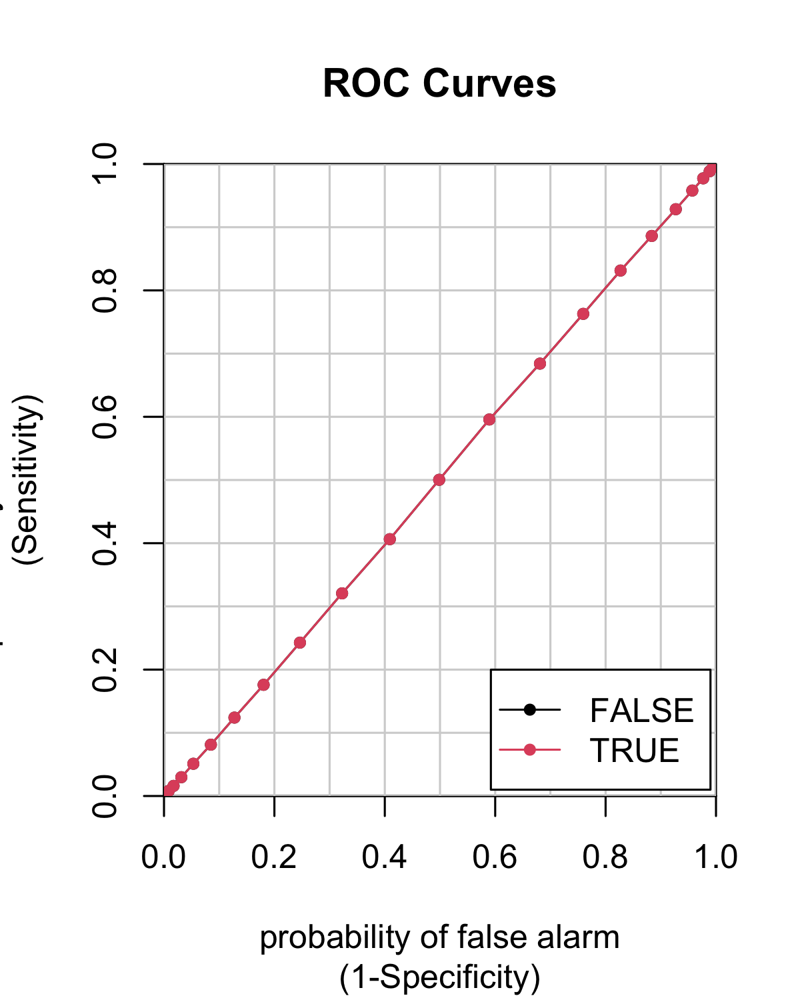
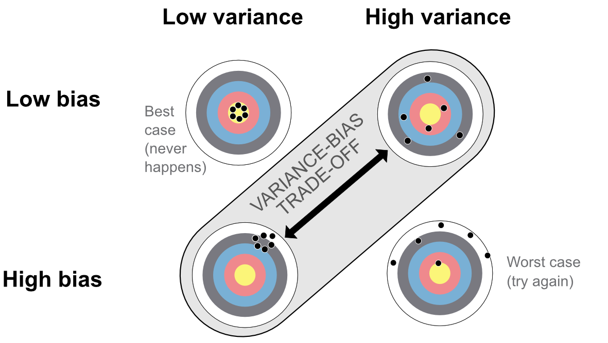
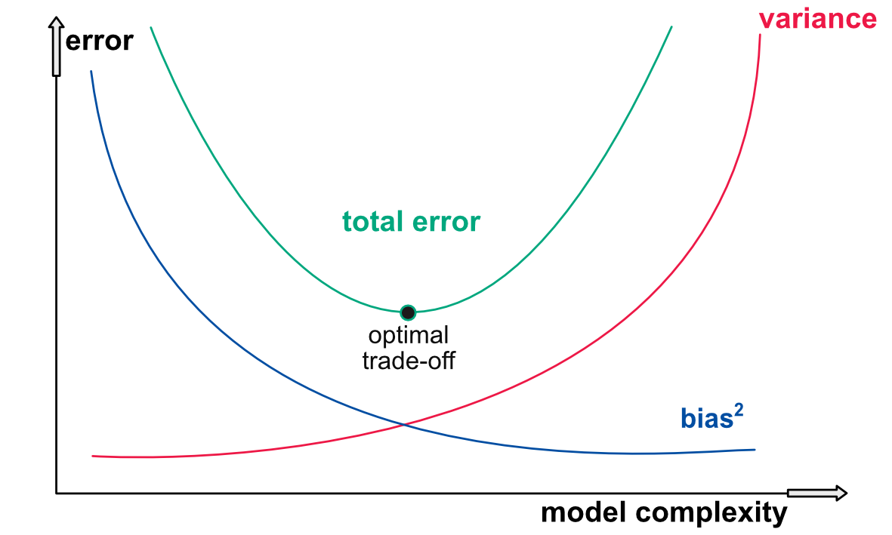
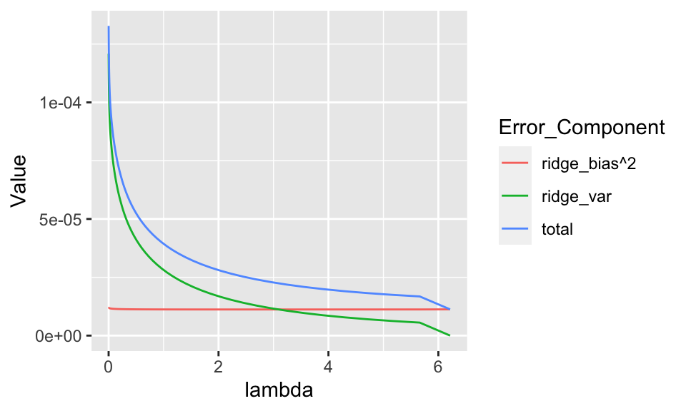
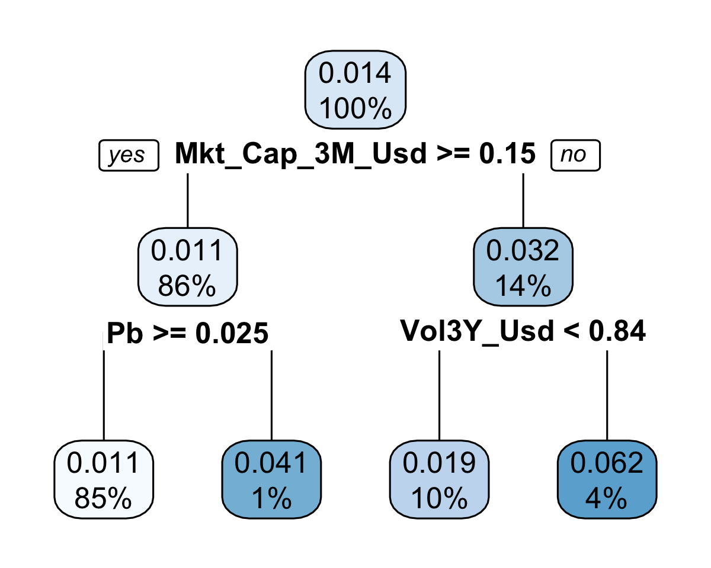
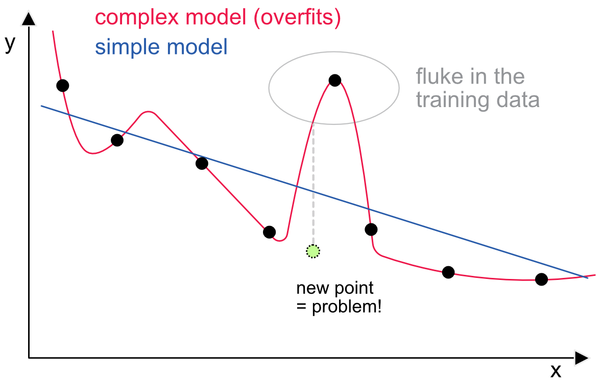
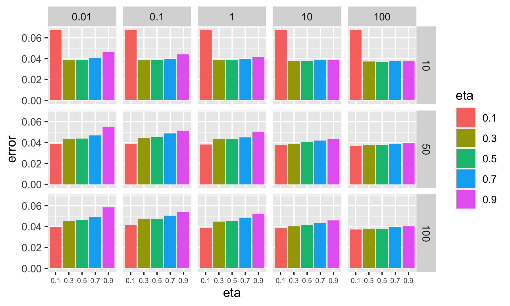
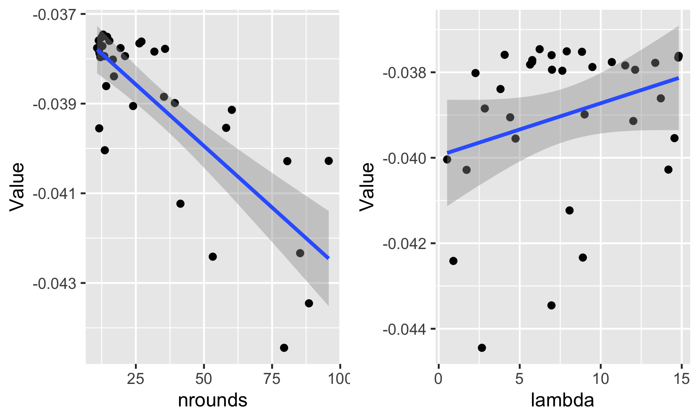

10 验证与调参
如章节所示 5 到 11、ML 模型需要用户指定的选择才能进行训练。这些选择包括参数值（学习率、惩罚强度等）或架构选择（例如网络的结构）。 ML 引擎中的替代设计可能会导致不同的预测，因此选择一个好的设计至关重要。我们参考的工作 Probst, Bischl, and Boulesteix (2018) 研究超参数调参对模型性能的影响。对于某些模型（神经网络和增强树）来说，自由度非常大，以至于找到正确的参数可能变得复杂且具有挑战性。本章讨论了这些问题，但读者必须意识到构建良好模型没有捷径。制作有效的模型非常耗时，而且通常是多次迭代的结果。
10.1 学习指标
训练前设置的参数值称为 超参数。为了能够选择好的超参数，必须定义评估 ML 模型性能的指标。正如 ML 中经常出现的情况一样，寻求预测数字（回归）的模型和尝试预测类别（分类）的模型之间存在二分法。在我们概述常见的评估基准之前，我们先提到计量经济学方法 J. Li, Liao, and Quaedvlieg (2020)。作者建议与给定基准相比评估预测方法的性能， 有条件的 一些外部变量。这有助于监控模型在哪些（经济）条件下优于基准。测试的完整实现非常复杂，我们建议感兴趣的读者查看论文中的推导。
10.1.1 回归分析
回归分析中的误差通常以直接的方式进行评估。的 \(L^1\) 和 \(L^2\) 规范是主流；它们都很容易解释和计算。第二个，根 均方误差 (RMSE) 在任何地方都是可微的，但更难掌握，并且给予异常值更多的权重。第一个，平均绝对误差给出了与实现值的平均距离，但在零时不可微分。正式地，我们将它们定义为 \[\begin{align} \tag{10.1} \text{MAE}(\textbf{y},\tilde{\textbf{y}})&=\frac{1}{I}\sum_{i=1}^I|y_i-\tilde{y}_i|, \\ \tag{10.2} \text{MSE}(\textbf{y},\tilde{\textbf{y}})&=\frac{1}{I}\sum_{i=1}^I(y_i-\tilde{y}_i)^2, \end{align}\]
RMSE 只是 MSE 的平方根。总是可以通过添加权重来推广这些公式 \(w_i\) 产生实例重要性的异质性。让我们简单评论一下MSE。它是迄今为止机器学习中最常见的损失函数，但它不一定是投资组合分配任务中收益率预测的最佳选择。如果我们将损失分解为三项，我们就会得到实现收益平方和、预测收益平方和以及两者之间的乘积（粗略地说，如果我们假设均值为零，则为协方差项）。第一个术语并不重要。第二个控制预测值在零附近的离散度。从分配器的角度来看，第三项是最有趣的。叉积的负数 \(-2y_i\tilde{y}_i\) 总是对投资者有利：要么这两项都是正数，模型识别出了有利可图的资产，要么都是负数，模型识别出了一个糟糕的机会。正是当 \(y_i\) 和 \(\tilde{y}_i\) 没有出现问题的相同迹象。因此，相比于 \(\tilde{y}_i^2\)，交叉项更重要。尽管如此，算法并未针对该指标进行优化。21
这些指标（MSE 和 RMSE）在 ML 之外广泛用于评估预测误差。下面，我们提出了有时也用于量化模型质量的其他指标。根据线性回归， \(R^2\) 可以在任何预测练习中进行计算。 \[\begin{equation} \tag{10.3} R^2(\textbf{y},\tilde{\textbf{y}})=1- \frac{\sum_{i=1}^I(y_i-\tilde{y}_i)^2}{\sum_{i=1}^I(y_i-\bar{y})^2}, \end{equation}\] 其中 \(\bar{y}\) 是标签的样本平均值。与经典的一个重要区别 \(R^2\) 上述数量可以计算为 测试样本 并且不在 训练样本。在这种情况下， \(R^2\) 当分子的均方误差大于测试样本的（有偏）方差时，可能为负值。有时，取平均值 \(\bar{y}\) 分母中被省略（如 Gu, Kelly, and Xiu (2020b) 例如）。删除平均值的好处在于，它将模型的预测与零预测进行比较。这与收益率特别相关，因为最简单的预测是恒定的零值和 \(R^2\) 然后可以测量模型是否超过了这个简单的基准。零预测总是优于样本平均值，因为后者可能非常依赖于周期。另外，删除 \(\bar{y}\) 分母中的值使度量更加保守，因为它机械地减少了 \(R^2\).
除了上面详细介绍的简单指标之外，还存在一些奇异的扩展，它们都包括在取平均值之前改变误差。两个值得注意的示例是平均绝对百分比误差 (MAPE) 和均方百分比误差 (MSPE)。他们不是查看原始误差，而是计算相对于原始值（待预测）的误差。因此，误差以百分比分数表示，平均值简单地等于： \[\begin{align} \tag{10.4} \text{MAPE}(\textbf{y},\tilde{\textbf{y}})&=\frac{1}{I}\sum_{i=1}^I\left|\frac{y_i-\tilde{y}_i}{y_i}\right|, \\ \tag{10.5} \text{MSPE}(\textbf{y},\tilde{\textbf{y}})&=\frac{1}{I}\sum_{i=1}^I\left(\frac{y_i-\tilde{y}_i}{y_i}\right)^2, \end{align}\]
如果需要，后者可以按平方根缩放。当标签为正且值可能很大时，可以缩放误差的大小，该误差可能非常大。实现此目的的一种方法是诉诸均方根对数误差 (RMSLE)，定义如下：
\[\begin{equation} \tag{10.6} \text{RMSLE}(\textbf{y},\tilde{\textbf{y}})=\sqrt{\frac{1}{I}\sum_{i=1}^I\log\left(\frac{1+y_i}{1+\tilde{y}_i}\right)}, \end{equation}\]
很明显当 \(y_i=\tilde{y}_i\)，误差度量等于零。
在我们继续讨论分类损失之前，我们简要评论一下 MSE 的一个缺点，它是迄今为止回归任务中最广泛的指标和目标。简单分解得出： \[\text{MSE}(\textbf{y},\tilde{\textbf{y}})=\frac{1}{I}\sum_{i=1}^I(y_i^2+\tilde{y}_i^2-2y_i\tilde{y}_i).\]
总而言之，第一项已给出，无需采取任何措施，因此模型专注于其他两项的最小化。第二项是模型值的离散度。第三项是叉积。虽然变化 \(\tilde{y}_i\) 确实很重要，第三项是迄今为止最重要的，尤其是在横截面中。通过增加来减少 MSE 更有价值 \(y_i\tilde{y}_i\)。当两个项具有相同符号时，该乘积确实为正，这正是投资者所寻找的： 正确的方向 为了赌注。对于某些算法（如神经网络），可以手动指定自定义损失。最大化总和 \(y_i\tilde{y}_i\) 可能是普通二次优化的一个很好的替代方案（参见第 7.4.3 获取实施示例）。
10.1.2 分类分析
与数字输出的绩效指标相比，分类结果的绩效指标有很大不同。这些指标中的很大一部分专用于二元类，尽管其中一些指标可以很容易地推广到多类模型。
我们以复杂性递增的顺序提出与这些指标相关的概念，并从真与假、正与负这两个二分法开始。在二元分类中，可以很方便地考虑真与假。在投资环境中，true 可能与正收益率或高于基准的收益率相关 - false 则相反。
那么有 4 种可能的预测结果。两种情况是预测正确（预测为真，实现为真，或者预测为错误，结果为错误），两种是预测错误（预测为真，实现为错误，反之亦然）。我们定义如下相应的聚合指标：
- 真阳性的频率： \(TP=I^{-1}\sum_{i=1}^I1_{\{y_i=\tilde{y}_i=1 \}},\)
- 真阴性的频率： \(TN=I^{-1}\sum_{i=1}^I1_{\{y_i=\tilde{y}_i=0 \}},\)
- 误报频率： \(FP=I^{-1}\sum_{i=1}^I1_{\{\tilde{y}_i=1,y_i=0 \}},\)
- 假阴性的频率： \(FN=I^{-1}\sum_{i=1}^I1_{\{\tilde{y}_i=0,y_i=1 \}},\)
其中 true 通常编码为 1， false 编码为 0。四个数字之和等于 1。这四个数字对样本外结果的影响截然不同，如图所示 10.1。在此表中（也称为 混淆矩阵），假设模型预测了未来盈利能力的一些代理。每一行代表模型的预测，每一列代表盈利能力的实现。最重要的情况是顶行的情况，此时模型预测为正结果，因为具有正预测盈利能力（可能相对于某些基准）的资产最终可能会出现在投资组合中。当然，如果资产表现良好（左单元格），这不是问题，但如果模型错误，就会受到惩罚，因为投资组合将受到影响。

图 10.1：混淆矩阵：二元结果的总结。
在这两类错误中， Ⅰ型 对于投资者来说是最令人畏惧的，因为它对投资组合有直接影响。的 类型 II 错误只是错失了机会，而且影响力较小。最后，真正的负面资产是那些被正确排除在投资组合之外的资产。
从四个基准率中，可以得出其他有趣的指标：
-
准确度 = \(TP+TN\) 是正确预测的百分比；
-
召回 = \(\frac{TP}{TP+FN}\) 衡量检测获胜策略/资产的能力（左栏分析）。也称为敏感性或真阳性率（TPR）；
- 精度 = \(\frac{TP}{TP+FP}\) 计算良好投资的概率（顶行分析）；
- 特异性 = \(\frac{TN}{FP+TN}\) 测量被正确识别的实际阴性的比例（右栏分析）；
-
辐射 = \(\frac{FP}{FP+TN}=1-\)特异性是误报的概率（或误报率），即算法检测到错误执行资产的频率（右列分析）；
- F分数, \(\mathbf{F}_1=2\frac{\text{recall}\times \text{precision}}{\text{recall}+ \text{precision}}\) 是查全率和查准率的调和平均值。
所有这些项目都位于单位区间内，当它们增加时，模型被认为表现更好（除了相反的后果）。还有许多其他指标，例如错误发现率或错误遗漏率，但它们并不主流，引用也较少。此外，它们通常是上述函数的简单函数。
一个流行但更复杂的指标是 (ROC) 曲线下的面积，通常称为 AUC。复杂的部分是ROC曲线，其中ROC代表接收器操作特性；这个名字来源于信号理论。我们在下面解释它是如何构建的。
正如章节中所见 6 和 7，分类器生成的输出是一个实例属于一类的概率。然后通过选择具有最高值的类别将这些概率转换为类别。在二分类中，得分在0.5以上的类基本上获胜。
实际上，这个 0.5 阈值可能不是最佳的，当概率低于 0.4 时，模型可以很好地正确预测错误实例，否则预测正确实例。因此，测试决策阈值发生变化时会发生什么是一个自然的想法。 ROC 曲线就是这样做的，并将召回率绘制为阈值从零增加到一时的影响函数。
当阈值等于 0 时，真阳性等于 0，因为模型从不预测正值。因此，召回率和影响率都为零。当阈值等于 1 时，假阴性缩小到零，真阴性也缩小到零，因此召回率和下降率等于 1。他们的关系在这两个极端之间的行为被称为 ROC曲线。我们在下面的图中提供了程式化的示例 10.2。随机分类器对于召回和后果同样有利，因此 ROC 曲线将是从点 (0,0) 到 (1,1) 的线性线。为了证明这一点，想象一个带有 \(p\in (0,1)\) 真实实例的比例和以一定概率随机预测真实实例的分类器 \(p'\in (0,1)\)。然后因为样本和预测是独立的， \(TP=p'p\), \(FP = p'(1-p)\), \(TN=(1-p')(1-p)\) 和 \(FN=(1-p')p\)。考虑到上述定义，召回率和后果都等于 \(p'\).

图 10.2： 程式化 ROC 曲线。
ROC 曲线高于 45° 角的算法的性能优于普通分类器。事实上，该曲线可以被视为利益之间的权衡（在 \(y\) 轴）减去成本（在轴上选择错误资产的几率） \(x\) 轴）。因此，高于 45° 至关重要。最好的分类器有一条 ROC 曲线，从点 (0,0) 到点 (0,1) 再到点 (1,1)。在点 (0,1) 处，后果为空，因此不存在误报，召回率等于 1，因此也不存在误报：模型总是正确的。反之亦然：在点 (1,0) 处，模型总是错误的。
下面，我们使用一个特定的包（caTools）来计算测试样本上给定预测集的 ROC 曲线。
if(!require(caTools)){install.packages("caTools")}
library(caTools) # Package for AUC computation
colAUC(X = predict(fit_RF_C, testing_sample, type = "prob"),
y = testing_sample$R1M_Usd_C,
plotROC = TRUE)
图 10.3： ROC 曲线示例。
## FALSE TRUE
## FALSE vs. TRUE 0.5003885 0.5003885图中 10.3，曲线非常接近 45° 角，模型看起来与随机分类器一样好（或者更确切地说，一样糟糕）。
最后，为了比较目的，拥有一整条曲线是不切实际的，因此整条曲线的信息被综合到曲线下方的区域中，即对应函数的积分。 45° 角（象限平分线）的面积为 0.5（它是具有单位面积的单位正方形的一半）。因此，任何好的模型都应具有高于 0.5 的曲线下面积 (AUC)。完美模型的 AUC 为 1。
我们以多类数据来结束本小节。当输出（即标签）有两个以上类别时，事情会变得更加复杂。仍然可以计算混淆矩阵，但维度更大并且更难以解释。简单的指标如 \(TP\), \(TN\)等等，必须以非标准的方式进行概括。在这种情况下，最简单的度量是方程中定义的交叉熵 (7.5)。我们参考章节 6.1.2 有关与分类标签相关的损失的更多详细信息。
10.2 验证
验证是在开始将模型部署到真实或实时数据（例如，出于交易目的）之前对其进行测试和调整的阶段。不用说，这很关键。
10.2.1 方差与偏差的权衡：理论
的 方差-偏差权衡 是监督学习的核心概念之一。为了解释它，我们假设数据是由简单模型生成的 \[y_i=f(\textbf{x}_i)+\epsilon_i, \quad \mathbb{E}[\boldsymbol{\epsilon}]=0, \quad \mathbb{V}[\boldsymbol{\epsilon}]=\sigma^2,\]
但估计产量的模型
\[y_i=\hat{f}(\textbf{x}_i)+\hat{\epsilon}_i. \]
给定一个未知样本 \(\textbf{x}\)，平均平方误差的分解为
\[\begin{align} \tag{10.7} \mathbb{E}[\hat{\epsilon}^2]&=\mathbb{E}[(y-\hat{f}(\textbf{x}))^2]=\mathbb{E}[(f(\textbf{x})+\epsilon-\hat{f}(\textbf{x}))^2] \\ &= \underbrace{\mathbb{E}[(f(\textbf{x})-\hat{f}(\textbf{x}))^2]}_{\text{total quadratic error}}+\underbrace{\mathbb{E}[\epsilon^2]}_{\text{irreducible error}} \nonumber \\ &= \mathbb{E}[\hat{f}(\textbf{x})^2]+\mathbb{E}[f(\textbf{x})^2]-2\mathbb{E}[f(\textbf{x})\hat{f}(\textbf{x})]+\sigma^2\nonumber\\ &=\mathbb{E}[\hat{f}(\textbf{x})^2]+f(\textbf{x})^2-2f(\textbf{x})\mathbb{E}[\hat{f}(\textbf{x})]+\sigma^2\nonumber\\ &=\left[ \mathbb{E}[\hat{f}(\textbf{x})^2]-\mathbb{E}[\hat{f}(\textbf{x})]^2\right]+\left[\mathbb{E}[\hat{f}(\textbf{x})]^2+f(\textbf{x})^2-2f(\textbf{x})\mathbb{E}[\hat{f}(\textbf{x})]\right]+\sigma^2\nonumber\\ &=\underbrace{\mathbb{V}[\hat{f}(\textbf{x})]}_{\text{variance of model}}+ \quad \underbrace{\mathbb{E}[(f(\textbf{x})-\hat{f}(\textbf{x}))]^2}_{\text{squared bias}}\quad +\quad\sigma^2 \nonumber \end{align}\]
在上面的推导中， \(f(x)\) 不是随机的，但是 \(\hat{f}(x)\) 群岛另外，在第二行中，我们假设 \(\mathbb{E}[\epsilon(f(x)-\hat{f}(x))]=0\)，这可能并不总是成立（尽管这是一个非常常见的假设）。因此，平均平方误差具有三个组成部分：
- 模型的方差（相对于其预测）；
- 模型偏差的平方；
- 和一个 不可约误差 （与特定模型的选择无关）。
最后一个不受模型变化的影响，因此挑战是最小化前两个的总和。这被称为方差-偏差权衡，因为减少一个往往会导致另一个的增加。因此，我们的目标是评估何时其中一项的小幅增加会导致另一项的大幅下降。
有多种方法可以表示这种权衡，我们展示了其中两种。第一个与射箭有关（见图 10.4）如下。最好的情况（左上）是所有射击都集中在中间时：平均而言，弓箭手瞄准正确并且所有箭头都非常接近。最坏的情况（右下）正好相反：平均箭头位于目标中心上方（偏差非零）并且箭头的分散度很大。

图 10.4：方差-偏差权衡的第一个表示。
ML中最常遇到的情况是另外两种配置：要么箭头（预测）集中在一个小周界内，但周界不是目标的中心；要么箭头（预测）集中在一个小周界内，但该周界不是目标的中心；或者箭头平均分布在中心周围，但平均而言远离中心。
通常描述方差偏差权衡的第二种方式是通过以下概念 模型复杂度。最简单的模型是常数模型：预测始终相同，例如等于训练集中标签的平均值。当然，这个预测往往会与测试集的实现值相去甚远（其偏差会很大），但至少其方差为零。另一方面，具有与实例一样多的叶子的决策树具有非常复杂的结构。它可能会有较小的偏差，但毫无疑问，这并不能明显地补偿由于模型的复杂性而引起的方差的增加。
权衡的这个方面如图所示 10.5 下面。在图的左侧，简单模型的方差较小，但偏差较大，而在右侧，复杂模型则相反。好的模型通常位于两者之间，但很难找到最佳组合。

图 10.5：方差-偏差权衡的第二种表示法。
方差-偏差权衡最容易处理的理论形式是岭回归。22 此类回归中的系数估计由下式给出 \(\hat{\mathbf{b}}_\lambda=(\mathbf{X}'\mathbf{X}+\lambda \mathbf{I}_N)^{-1}\mathbf{X}'\mathbf{Y}\) （见章节 5.1.1），其中 \(\lambda\) 是惩罚强度。假设一个 真实 数据生成过程的线性形式（\(\textbf{y}=\textbf{Xb}+\boldsymbol{\epsilon}\) 其中 \(\textbf{b}\) 未知且 \(\sigma^2\) 是误差的方差 - 具有单位相关矩阵），这产生 \[\begin{align} \mathbb{E}[\hat{\textbf{b}}_\lambda]&=\textbf{b}-\lambda(\textbf{X}'\textbf{X}+\lambda \textbf{I}_N)^{-1} \textbf{b}, \\ \tag{10.8} \mathbb{V}[\hat{\textbf{b}}_\lambda]&=\sigma^2(\textbf{X}'\textbf{X}+\lambda \textbf{I}_N)^{-1}\textbf{X}'\textbf{X} (\textbf{X}'\textbf{X}+\lambda \textbf{I}_N)^{-1}. \end{align}\]
基本上，这意味着估计器的偏差等于 \(-\lambda(\textbf{X}'\textbf{X}+\lambda \textbf{I}_N)^{-1} \textbf{b}\)，在没有惩罚（经典回归）的情况下为零，并且在以下情况下收敛到某个有限数： \(\lambda \rightarrow \infty\)，即当模型变得恒定时。请注意，如果估计量的偏差为零，则预测也将是： \(\mathbb{E}[\textbf{X}(\textbf{b}-\hat{\textbf{b}})]=\textbf{0}\).
无约束回归情况下的（估计值）方差等于 \(\mathbb{V}[\hat{\textbf{b}}]=\sigma (\textbf{X}'\textbf{X})^{-1}\)。在方程中 (10.8), 的 \(\lambda\) 减少逆矩阵中数字的大小。总体效果是这样的 \(\lambda\) 增大，方差减小，并且在极限内 \(\lambda \rightarrow \infty\)，当模型恒定时方差为零。预测的方差是 \[\begin{align*} \mathbb{V}[\textbf{X}\hat{\textbf{b}}]&=\mathbb{E}[(\textbf{X}\hat{\textbf{b}}-\mathbb{E}[\textbf{X}\hat{\textbf{b}}])(\textbf{X}\hat{\textbf{b}}-\mathbb{E}[\textbf{X}\hat{\textbf{b}}])'] \\ &= \textbf{X}\mathbb{E}[(\hat{\textbf{b}}-\mathbb{E}[\hat{\textbf{b}}])(\hat{\textbf{b}}-\mathbb{E}[\hat{\textbf{b}}])']\textbf{X}' \\ &= \textbf{X}\mathbb{V}[\hat{\textbf{b}}]\textbf{X} \end{align*}\]
总而言之，岭回归非常方便，因为使用单个参数，它们就能够提供直接调整方差-偏差权衡的游标。
很容易说明用岭回归显示权衡是多么简单。在下面的例子中，我们回收了章节中训练的岭模型 5.
ridge_errors <- predict(fit_ridge, x_penalized_test) - # Errors from all models
(rep(testing_sample$R1M_Usd, 100) %>%
matrix(ncol = 100, byrow = FALSE))
ridge_bias <- ridge_errors %>% apply(2, mean) # Biases
ridge_var <- predict(fit_ridge, x_penalized_test) %>% apply(2, var) # Variance
tibble(lambda, ridge_bias^2, ridge_var, total = ridge_bias^2+ridge_var) %>% # Plot
gather(key = Error_Component, value = Value, -lambda) %>%
ggplot(aes(x = lambda, y = Value, color = Error_Component)) + geom_line()
图 10.6：岭回归的误差分解。
图中 10.6，该图案与图中所示的不同 10.5。在图中，当强度 lambda 增加时，参数的大小缩小，模型变得更简单。因此，最简单的模型似乎是最好的选择：增加复杂性会增加方差，但不会改善偏差！一个可能的原因是，特征实际上并不具有太多的预测价值，因此恒定模型与基于不相关变量的更复杂的模型一样好。
10.2.2 方差-偏差权衡：插图
方差与偏差的权衡通常以易于理解的理论术语来表示。尽管如此，它对于演示它如何在真正的算法选择上运行仍然很有用。下面，我们以树为例，因为它们的复杂性很容易评估。基本上，具有许多终端节点的树比具有少量簇的树更复杂。
我们从简约模型开始，我们将在下面对其进行训练。
fit_tree_simple <- rpart(formula,
data = training_sample, # Data source: training sample
cp = 0.0001, # Precision: smaller = more leaves
maxdepth = 2 # Maximum depth (i.e. tree levels)
)
rpart.plot(fit_tree_simple)
图 10.7：简单树。
模型如图所示 10.7 只有 4 个簇，这意味着预测只能采用四个值。最小的为 0.011，涵盖了样本的一大部分 (85%)，最大的为 0.062，仅对应于训练样本的 4%。
然后我们就可以计算预测的偏差和方差 测试 设置。
## [1] 0.004973917## [1] 0.0001398003平均而言，误差略为正，总体高估为 0.005。正如预期的那样，方差非常小 (10^{-4})。
对于复杂模型，我们采用在第 1 节中获得的提升树 6.4.6 （fit_xgb）。该模型聚合了40棵树，最大深度为4，无疑更加复杂。
## [1] 0.003347682## [1] 0.00354207与简单模型相比，偏差确实更小，但作为交换，方差大幅增加。净效应（通过 平方偏差）倾向于更简单的模型。
10.2.3 过度拟合的风险：原则
的概念 过拟合 是机器学习中最重要的之一。当模型过度拟合时，其预测的准确性将令人失望，因此这是导致模型过度拟合的主要原因之一 一些 策略在样本外失败。因此，重要的是不仅要了解什么是过度拟合，还要了解如何减轻其影响。
最近关于这一主题及其对投资组合策略的影响的参考文献是 Hsu et al. (2018)，它建立在 White (2000)。这两个参考文献都不涉及 ML 模型，但原理是相同的。当给定数据集时，足够强度的分析（由人或机器进行）将始终能够检测到某些模式。这些模式是否虚假是关键问题。
图中 10.8，我们用一个简单的视觉示例来说明这个想法。我们尝试找到一个将 x 映射到 y 的模型。 （训练）数据点是小黑圆圈。最简单的模型是常数模型（只有一个参数），但是有两个参数（水平和坡度），拟合已经相当不错了。这用蓝线显示。有了足够数量的参数，就有可能建立一个流经所有点的模型。一个例子是高维多项式。其中一种模型用红线表示。现在数据集中似乎有一个奇怪的点，并且复杂模型非常适合匹配该点。

图 10.8：过度拟合的说明：紧密匹配训练数据的模型很少是一个好主意。
添加了一个浅绿色的新点。可以公平地说，它遵循了其他要点的一般模式。简单的模型并不完美，误差也是不可忽略的。然而，复杂模型（用灰色虚线显示）产生的误差大约是原来的两倍。这个简化的示例表明，与训练数据太接近的模型将捕获其他数据集中不会出现的特性。一个好的模型会忽略这些特性并坚持数据的持久结构。
10.2.4 过度拟合的风险：一些解决方案
显然，避免过度拟合的最简单方法是抵制复杂模型（例如高维神经网络或树集成）的诱惑。
模型的复杂性通常通过两种度量来衡量：模型参数的数量及其大小（通常通过其范数综合）。这些代理并不完美，因为有些 复杂的 模型可能只需要少量参数（甚至很小的参数值），但至少它们是简单且易于处理的。没有处理过度拟合的通用方法。下面，我们详细介绍一些 ML 工具系列的技巧。
对于 回归，有两种简单的方法来处理过度拟合。首先是参数的数量，即预测变量的数量。有时，最好只选择特征的子样本，特别是当其中一些特征高度相关时（通常，70% 的阈值被认为对于特征之间的绝对相关性来说太高）。第二种解决方案是惩罚（通过 LASSO、ridge 或 elasticnet），这有助于减少估计的幅度，从而减少预测的方差。
对于树模型，有多种方法可以降低过度拟合的风险。当处理 简单的树，唯一的方法是限制叶子的数量。这可以通过多种方式来完成。首先，施加最大深度。如果它等于 \(d\)，那么这棵树最多可以有 \(2^d\) 终端节点。通常建议不要超出 \(d=6\)。复杂度参数为 rpart (cp) 是缩小树大小的另一种方法：任何新的分裂都必须导致损失的减少至少等于 cp。 如果不是，则认为分割没有用，因此不执行分割。因此，当 cp 很大时，树就不会生长。最后两个参数可用 rpart 是每个叶子中所需的最小实例数以及为继续分裂过程而请求的每个集群的最小实例数。这些数字越高（即更具强制性），种植复杂的树就越困难。
除了这些选项之外， 随机森林 允许控制森林中树的数量。理论上（参见 Breiman (2001)），这个参数不应该影响过度拟合的风险，因为新树只能通过多样化来帮助减少总误差。在实践中，出于计算时间的考虑，不建议超过 1,000 棵树。另外两个超参数是子样本大小（每个学习器都在其上进行训练）和保留用于学习的特征数量。它们不会对偏差和权衡产生直接影响，而是对原始性能产生直接影响。例如，如果子样本太小，树将无法学习足够的知识。如果特征数量太少，也会出现同样的问题。另一方面，选择大量的预测变量（即接近总数）可能会导致每个学习器的预测之间具有较高的相关性，因为训练样本中包含的信息重叠可能很高。
增强树 有其他选项可以帮助减轻过度拟合的风险。最明显的是学习率，它将每棵新树的影响打折扣 \(\eta \in (0,1)\)。当学习率较高时，算法学习速度过快，容易紧贴训练数据。当它较低时，模型会非常渐进地学习，如果集成中有足够多的树，这会很有效。事实上，学习率和树的数量必须同步选择：如果两者都很低，集成将不会学到任何东西，如果两者都很大，则会过度拟合。提升树参数的库并不止于此。分值和叶子数量的惩罚自然是防止模型过于深入训练样本的特殊性的工具。最后，像章节中提到的那样的单调性约束 6.4.5 也是一种在模型上强加某种结构并迫使其检测特定模式的有效方法。
最后 神经网络 还有许多旨在防止过度拟合的选项。就像增强树一样，其中一些是学习率以及权重和偏差的惩罚（通过它们的范数）。当模型理论上需要正输入时，约束（如非负约束）也可以提供帮助。最后，dropout 始终是减少网络维度（参数数量）的直接方法。
10.3 寻找好的超参数
10.3.1 方法
让我们假设有 \(p\) 模型运行前定义的参数。最简单的方法是测试这些参数的不同值并选择产生最佳结果的值。执行这些测试主要有两种方法：独立测试和顺序测试。
独立测试很简单，分为两类：网格（确定性）搜索和随机探索。确定性方法的优点是它均匀地覆盖空间并确保没有遗漏任何角落。缺点是计算时间。事实上，对于每个参数，测试至少五个值似乎是合理的，这使得 \(5^p\) 组合。如果 \(p\) 很小（小于 3），当回测不太长时这是可以管理的。当 \(p\) 很大时，组合的数量可能会变得令人望而却步。这时随机探索会很有用，因为在这种情况下，用户预先指定测试数量，并且参数是随机绘制的（通常在每个参数的给定范围内均匀绘制）。随机搜索的缺陷是参数空间中的某些区域可能未被覆盖，如果最佳选择位于那里，这可能会出现问题。尽管如此，它仍显示在 Bergstra and Bengio (2012) 随机探索优于网格搜索。
网格搜索和随机搜索都不是最优的，因为它们很可能将时间花在不相关的参数空间区域，从而浪费计算时间。给定已测试的多个参数点，最好将搜索集中在最有可能出现最佳点的区域。这可以通过一个交互式过程来实现，该过程在测试每个新点后调整搜索。在金融这个大领域，有几篇致力于调参的论文： S. I. Lee (2020) 和 Nystrup, Lindstrom, and Madsen (2020).
这个方向的另一种流行方法是 贝叶斯优化 （BO）。中心对象是学习过程的目标函数。我们称这个函数为 \(O\) 它可以被广泛地视为可能与惩罚和约束相结合的损失函数。为了简单起见，我们不会提及训练/测试样本，它们被认为是固定的。感兴趣的变量是向量 \(\textbf{p}=(p_1,\dots,p_l)\) 它综合了影响的超参数（学习率、惩罚强度、模型数量等） \(O\)。我们感兴趣的程序是
\[\begin{equation} \tag{10.9} \textbf{p}_*=\underset{\textbf{p}}{\text{argmin}} \ O(\textbf{p}). \end{equation}\]
这种优化的主要问题是计算 \(O(\textbf{p})\) 是非常昂贵的。因此，选择每次试验至关重要 \(\textbf{p}\) 明智地。 BO 的一个关键假设是 \(O\) 是高斯分布并且 \(O\) 可以用以下的线性组合来表示 \(p_l\)。换句话说，目标是在输入之间建立贝叶斯线性回归 \(\textbf{p}\) 和输出（因变量） \(O\)。一旦模型被估计出来，集中在后验密度中的信息 \(O\) 用于对在哪里寻找新值进行有根据的猜测 \(\textbf{p}\).
这个有根据的猜测是基于所谓的 获取功能。假设我们已经测试过 \(m\) 值 \(\textbf{p}\)，我们写的 \(\textbf{p}^{(m)}\)。写入当前最佳参数 \(\textbf{p}_m^*=\underset{1\le k\le m}{\text{argmin}} \ O(\textbf{p}^{(k)})\)。如果我们测试一个新点 \(\textbf{p}\)，那么只有当 \(O(\textbf{p})<O(\textbf{p}_m^*)\)，即新目标是否提高了我们已知的最小值。该改进的平均值为 \[\begin{equation} \tag{10.10} \textbf{EI}_m(\textbf{p})=\mathbb{E}_m[[O(\textbf{p}_m^*)-O(\textbf{p})]_+], \end{equation}\]
积极的部分在其中 \([\cdot]_+\) 强调当 \(O(\textbf{p})\ge O(\textbf{p}_m^*)\)，增益为零。期望的索引为 \(m\) 因为它是根据后验分布计算的 \(O(\textbf{p})\) 基于 \(m\) 样本 \(\textbf{p}^{(m)}\)。下一个样本的最佳选择 \(\textbf{p}^{m+1}\) 那么就是 \[\begin{equation} \tag{10.11} \textbf{p}^{m+1}=\underset{\textbf{p}}{\text{argmax}} \ \textbf{EI}_m(\textbf{p}), \end{equation}\] 这对应于预期改进的最大位置。除了 EI 之外，还可以对其他度量进行优化，例如改进的概率，即 \(\mathbb{P}_m[O(\textbf{p})<O(\textbf{p}_m^*)]\).
在紧凑的形式中，迭代过程可以概述如下：
-
步骤1：计算 \(O(\textbf{p}^{(m)})\) 为了 \(m=1,\dots,M_0\) 参数值。
-
步骤 2a：依次计算后验密度 \(O\) 在所有可用点上。
-
步骤2b：计算要测试的最佳新点 \(\textbf{p}^{(m+1)}\) 方程中给出 (10.11).
-
步骤2c：计算新的目标值 \(O(\textbf{p}^{(m+1)})\).
- 步骤3：尽可能重复步骤 2a 至 2c，并返回 \(\textbf{p}^{(m)}\) 产生最小的目标值。
有兴趣的读者可以看看 Snoek, Larochelle, and Adams (2012) 和 Frazier (2018) 有关此方法的数值方面的更多详细信息。
最后，为了完整起见，我们提到最后一种调整超参数的方法。由于优化方案为 \(\underset{\textbf{p}}{\text{argmin}} \ O(\textbf{p})\)，一种自然的方法是利用 \(O\) 关于 \(\textbf{p}\)。事实上，如果梯度 \(\frac{\partial O}{\partial p_l}\) 已知，那么梯度下降总是会提高目标值。问题是很难计算可靠的梯度（有限差分的成本可能会很高）。尽管如此，一些方法（例如， Maclaurin, Duvenaud, and Adams (2015)）已成功应用于大维参数空间的优化。
我们最后提到调查 Bouthillier and Varoquaux (2020)，涵盖了 2019 年举行的 2 个主要的 AI 会议。它表明大多数论文都诉诸于超参数调参。最常被引用的两种方法是 手动调整 （手工采摘）和 网格搜索.
10.3.2 示例：网格搜索
为了说明网格搜索的过程，我们将尝试找到提升树的最佳参数。我们寻求量化三个参数的影响：
-
eta，学习率，
-
nrounds，种植的树数量，
- lambda，权重正则化器，通过权重/分数的平方总和来惩罚目标函数。
下面，我们使用要测试这些参数的值创建一个网格。
eta <- c(0.1, 0.3, 0.5, 0.7, 0.9) # Values for eta
nrounds <- c(10, 50, 100) # Values for nrounds
lambda <- c(0.01, 0.1, 1, 10, 100) # Values for lambda
pars <- expand.grid(eta, nrounds, lambda) # Exploring all combinations!
head(pars) # Let's see the parameters## Var1 Var2 Var3
## 1 0.1 10 0.01
## 2 0.3 10 0.01
## 3 0.5 10 0.01
## 4 0.7 10 0.01
## 5 0.9 10 0.01
## 6 0.1 50 0.01
eta <- pars[,1]
nrounds <- pars[,2]
lambda <- pars[,3]考虑到网格搜索的计算成本，我们对具有少量特征的数据集进行探索（我们从本章中回收了这些特征） 6）。为了避免循环的负担，我们借助 R 的函数式编程功能，通过 purrr 包。这允许我们定义一个可以减轻和简化代码的函数。该函数（代码如下）接受数据和参数输入并返回算法的错误度量。我们选择均方误差来评估超参数值的影响。
grid_par <- function(train_matrix, test_features, test_label, eta, nrounds, lambda){
fit <- train_matrix %>%
xgb.train(data = ., # Data source (pipe input)
eta = eta, # Learning rate
objective = "reg:squarederror", # Objective function
max_depth = 5, # Maximum depth of trees
lambda = lambda, # Penalisation of leaf values
gamma = 0.1, # Penalisation of number of leaves
nrounds = nrounds, # Number of trees used
verbose = 0 # No comment from algo
)
pred <- predict(fit, test_features) # Predictions based on model & test values
return(mean((pred-test_label)^2)) # Mean squared error
} 然后可以通过函数编程工具来处理grid_par函数 映射图 这将自动对参数值执行循环。
# grid_par(train_matrix_xgb, xgb_test, testing_sample$R1M_Usd, 0.1, 3, 0.1) # Possible test
grd <- pmap(list(eta, nrounds, lambda), # Parameters for the grid search
grid_par, # Function on which to apply the search
train_matrix = train_matrix_xgb, # Input for function: training data
test_features = xgb_test, # Input for function: test features
test_label = testing_sample$R1M_Usd # Input for function: test labels (returns)
)
grd <- data.frame(eta, nrounds, lambda, error = unlist(grd)) # Dataframe with all results一旦收集了平方平均误差，就可以绘制它们。我们特意选择使用 3 个参数，因为它们的影响可以同时绘制在一张图表上。
grd$eta <- as.factor(eta) # Params as categories (for plot)
grd %>% ggplot(aes(x = eta, y = error, fill = eta)) + # Plot!
geom_bar(stat = "identity") +
facet_grid(rows = vars(nrounds), cols = vars(lambda)) +
theme(axis.text.x = element_text(size = 6))
图 10.9： 许多参数值的误差度量图 (SMEs)。图表的每一行对应于 nrounds，每一列对应于 lambda。
图中 10.9，主要信息是小的学习率（\(\eta=0.1\)当树的数量很小时（nrounds=10），这意味着算法学习得不够，这对预测的质量是不利的。
网格搜索可以分两个阶段执行：第一阶段帮助定位感兴趣的区域（具有最低的损失/目标值），然后使用网格上参数的细化值放大这些区域。根据上述结果，这意味着要考虑许多学习者（超过 50 个，可能超过 100 个），并避免较大的学习率，例如 \(\eta=0.9\) 或 \(\eta=0.8\).
10.3.3 示例：贝叶斯优化
R 中有几个与贝叶斯优化相关的包。我们与 rBayesianOptimization，这是通用目的，但也需要更多的编码参与。
就像网格搜索一样，我们需要编写用于优化超参数的目标函数。下 rBayesianOptimization，输出必须具有特定的形式，带有分数和预测变量。该函数将 最大化 分数，因此我们将其定义为 减号 均方误差。
bayes_par_opt <- function(train_matrix = train_matrix_xgb, # Input for func: train data
test_features = xgb_test, # Input for func: test feats
test_label = testing_sample$R1M_Usd, # Input for func: test label
eta, nrounds, lambda){ # Input for func params
fit <- train_matrix %>%
xgb.train(data = ., # Data source (pipe input)
eta = eta, # Learning rate
objective = "reg:squarederror", # Objective function
max_depth = 5, # Maximum depth of trees
lambda = lambda, # Penalisation of leaf values
gamma = 0.1, # Penalisation of number of leaves
nrounds = round(nrounds), # Number of trees used
verbose = 0 # No comment from algo
)
pred <- predict(fit, test_features) # Forecast based on fitted model & test values
list(Score = -mean((pred-test_label)^2), # Minus RMSE
Pred = pred) # Predictions on test set
}一旦定义了目标函数，就可以将其插入贝叶斯优化器中。
library(rBayesianOptimization)
bayes_opt <- BayesianOptimization(bayes_par_opt, # Function to maximize
bounds = list(eta = c(0.2, 0.8), # Bounds for eta
lambda = c(0.1, 1), # Bounds for lambda
nrounds = c(10, 100)), # Bounds for nrounds
init_points = 10, # Nb initial points for first estimation
n_iter = 24, # Nb optimization steps/trials
acq = "ei", # Acquisition function = expected improvement
verbose = FALSE)##
## Best Parameters Found:
## Round = 14 eta = 0.3001394 lambda = 0.4517514 nrounds = 10.0000 Value = -0.03793923
bayes_opt$Best_Par## eta lambda nrounds
## 0.3001394 0.4517514 10.0000000最终的参数表明建议抵制过度拟合：少量的学习者和大量的惩罚似乎是最好的选择。
为了确认这些结果，我们绘制了损失（直到符号）和两个超参数之间的关系。每个点对应于优化中测试的一个值。最佳值明显位于左图的左侧和右图的右侧，并且该模式清晰可见。根据这些图表，选择较少数量的树和较大的惩罚因子（最大化减去损失）似乎确实更明智。
library("ggpubr") # Package for combining plots
plot_rounds <- bayes_opt$History %>%
ggplot(aes(x = nrounds, y = Value)) + geom_point() + geom_smooth(method = "lm")
plot_lambda <- bayes_opt$History %>%
ggplot(aes(x = lambda, y = Value)) + geom_point() + geom_smooth(method = "lm")
par(mar = c(1,1,1,1))
ggarrange(plot_rounds, plot_lambda, ncol = 2)
图 10.10：（减去）损失和超参数值之间的关系。
10.4 关于回测验证的简短讨论
回测中的验证主题比看起来更复杂。事实上，它可以在两个范围内运行，具体取决于预测模型是动态的（在每次再平衡时更新）还是固定的。
让我们从第一个选项开始。在这种情况下，目标是建立一个独特的模型并在不同的时间段对其进行测试。关于在这种情况下适合验证模型的方法一直存在争论。通常，在训练之后的连续日期测试模型是有意义的。这是更有意义的，因为它复制了现场情况下会发生的情况。
在机器学习中，一种流行的方法是将数据分为 \(K\) 分区并测试 \(K\) 不同的模型：每个模型都在其中一个分区上进行测试，但在 \(K-1\) 其他人。这个所谓的 交叉验证 (CV) 被大多数专家（和常识）禁止，原因很简单：大多数时候，训练集包含来自未来日期的数据和对过去值的测试。尽管如此，一些人主张 CV 的一种特殊形式，旨在确保训练集和测试集之间没有信息重叠（《CV》中的第 7.4 和 12.4 节）。 De Prado (2018)）。前提是，如果收益横截面的结构随时间变化是恒定的，那么只要不存在重叠，对未来点的训练和对过去数据的测试就不会出现问题。论文 Schnaubelt (2019) 提供了许多验证方案的全面而详尽的浏览。
引用的一个例子 De Prado (2018) 是模型对看不见的危机的反应。 2008 年市场崩盘之后，至少有 11 年没有发生任何重大金融动荡。测试最新模型对碰撞反应的一种选择是在最近几年（例如 2015-2019 年）对其进行训练，并在 2008 年的不同时间点（例如几个月）进行测试，看看它的表现如何。
固定模型的优点是验证很容易：对于一组超参数，在一组日期上测试模型，并评估模型的性能。对其他参数重复该过程并选择最佳替代方案（或使用贝叶斯优化）。
第二个主要选项是模型在每次再平衡时更新（重新训练）。这里的基本思想是，收益率结构随着时间的推移而演变，动态模型将捕捉最新的趋势。缺点是验证必须（应该？）在每个再平衡日期重新运行。
让我们回顾一下回测的维度：
- 数量 策略：可能有几十个、几百个，甚至更多；
- 交易数量 日期：每月再平衡数百个；
- 数量 资产：数百或数千；
- 数量 特点: 几十个或几百个。
即使拥有大量的计算能力（GPUs 等），在多个日期训练多个模型也是耗时的，尤其是在参数空间很大时进行超参数调参时。因此，在样本外期间的每个交易日验证模型是不现实的。
一种解决方案是保留训练数据的早期部分，并对此子样本执行较小规模的验证。超参数在有限数量的日期上进行测试，并且在大多数情况下，它们表现出稳定性：一个日期的令人满意的参数通常对于下一个日期和下一个日期来说也是可以接受的。因此，在每个epoch更新模型时，可以使用这些值进行完整的回测。尽管如此，回测仍然是计算密集型的，因为必须使用每个再平衡日期的最新数据重新训练模型。